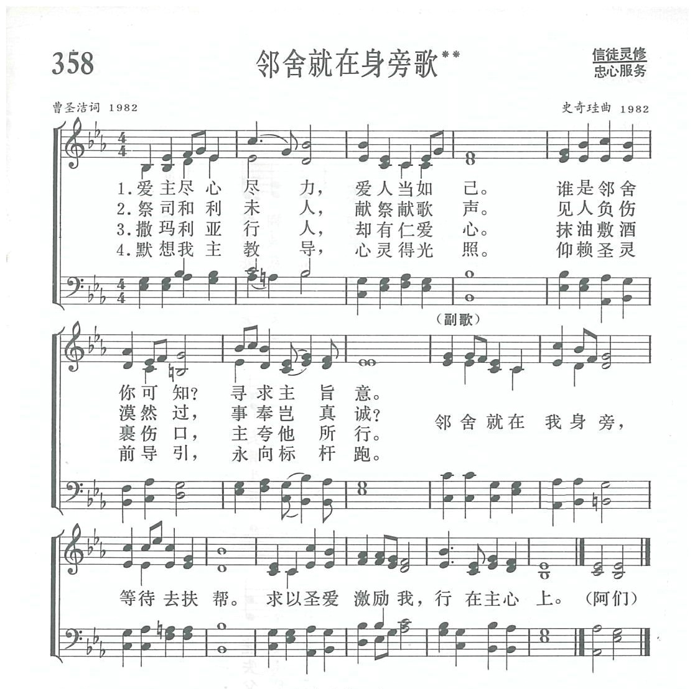

|
|
讚美詩(新編) |
|
|
|
|
https://www.zanmeishige.com/tab/14031.html?songbook=1&index=358
 |
|
|
|
|
-

https://www.youtube.com/watch?v=UFJSn_A5ywI&list=PLcOMG0FdMLMASkcGa9EGej2EJdzKRG6bR&index=359 -
https://youtu.be/Jsph4ThhTLU
第358首 邻舍就在身旁歌** _曹圣洁 NEIGHBOURS ARE JUST BESIDE YOU
经文：“……你想，这三个人哪一个是落在强盗手中的邻舍呢?’他说：‘是怜悯他的.’耶稣说：‘你去照样行吧!’”(路1O：3O-37)。
主耶稣引用申命记第6章第5节、利未记第19章第18节两处经文，把律法和先知的总纲归纳为“尽心、尽性、尽意、尽力爱上帝”和“爱人如己”这两句话。特别是在好撒玛利亚人比喻(路10：21一37)中，耶稣把谁是邻舍，即应该爱什么人的问题解答得很清楚，这首诗便是紧扣邻舍这个主题而写的。
歌词作者曹圣洁牧师(简历参阅第9首)很喜欢读好撒玛利亚人的故事，每次读好像都有新的亮光。她曾想到：祭司虽然每天事奉献祭，利未人虽然在圣殿内歌咏赞美，在一个被强盗打伤的人面前却无动于衷，他们的敬虔又有何益?撒玛利亚人当时是被犹太人轻视的外邦人，但主没有否定他的德行，而要信徒去照样行。好撒玛利亚人在给人帮助以前，并不是先问对方的宗教信仰如何；而是先想到那人的实际需要。因此“邻舍”不仅限制于信徒的范围，而应扩大到身边的众人。特别在“文革”期间，她在工厂内劳动了八年，更使她体会到基督徒必须与周围的人真诚接近，同甘苦、互扶帮，才能体现爱主爱人的真谛。这些感受都揉和在这首诗的歌词中。
这首诗的曲调是史奇珪牧师(简历参阅第9首)所谱。1952年下半年，史奇珪与曹圣洁在金陵协和神学院内是同班同学，毕业后同在上海教会内服务，在推广圣乐、青年事工、编辑《恩言》刊物等方面常有合作，在《新编》编辑部内他们又是同工。
1982年2月，曹圣洁把这首一气呵成的诗稿给史奇珪看。
原稿共三节，
第一节论到祭司，首句是“祭司为人献祭，却少省察自己”，
第二节谈到利未人，
第三节写撒玛利亚人，以此形成对比。
史奇珪看后非常兴奋，因他认为，以好撒玛利亚为主题的赞美诗很少见到，歌词有深刻的含义，十分难得。不过他和编辑部的其他同工也提出了修改的意见，建议把爱主爱人的总纲列在第一节，祭司和利未人的事可以合并在第二节，好撒玛利亚人的榜样列为第三节，第四节以仰赖圣灵光照引导结束。曹圣洁接受了这些意见，把它重新整理成为现在的词句。她特别着意于副歌，因为它不仅点了题，还是一个诚恳的祈求，表达自己愿意按上帝的心意而行。
史奇珪自告奋勇为这首诗谱曲，经过诚恳的祈祷与精心的思索，他写下了这个曲。起初，曹圣洁并不太满意，而史奇珪却信心十足，认为它有其特点，很少模仿性，并说：“如果我其它的创作圣诗都不被录取，只要这一曲能被采纳，就够了。
”经过这几年的实践，词作者也认为这首诗之所以能不胫而走，多亏此曲有新意，比较动听，为词增色不少。
https://www.xueshengshi.com/?p=9982